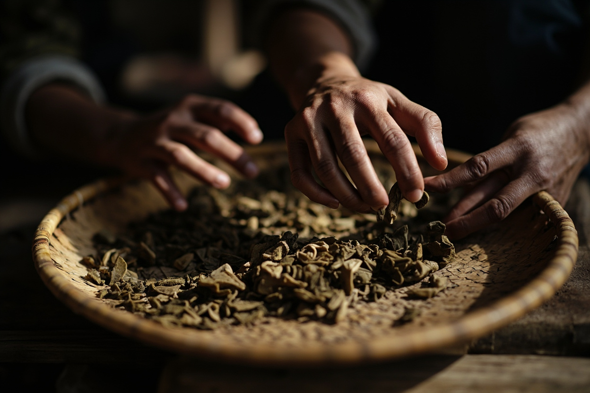
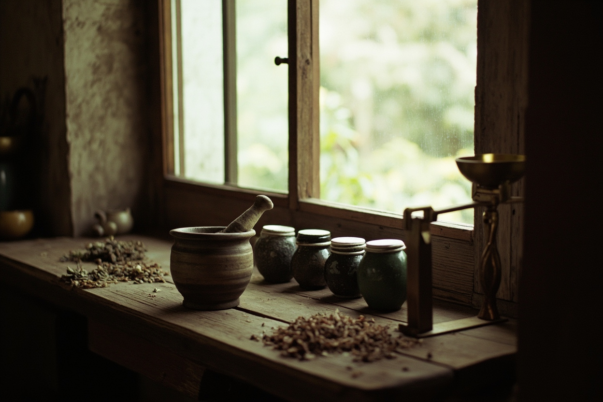
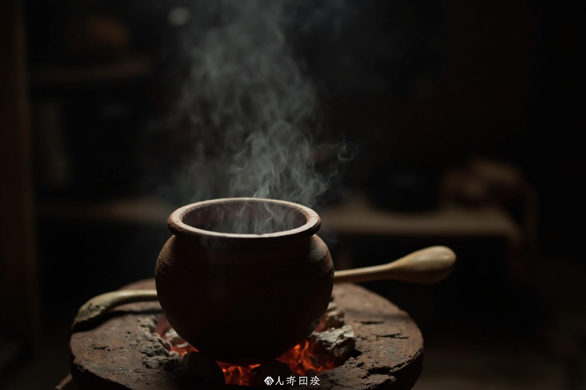
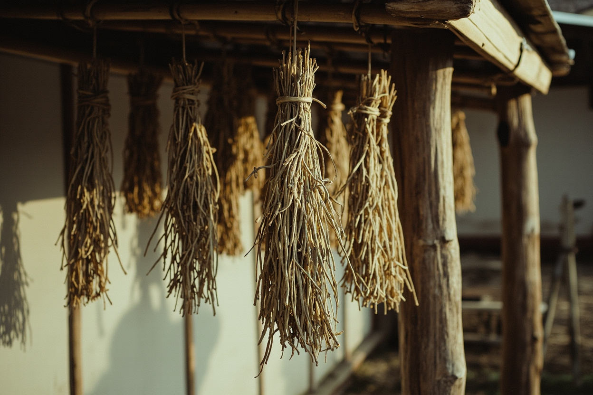

Chinese medicine wellness and organic food-based nourishment — everyday care with a foundation in Chinese medicine.
Yunyi (云燚, yún yì) is a Chinese medicine wellness and organic food-based nourishment brand from Shenzhen, founded by Ms. Liu. Its stance: do not compete with hospitals — one side prevents, the other nourishes.
A brand’s character usually comes from the way it started.

The brand began with two hands. “I started with my hands. Purely by hand,” she says.
And she draws the line clearly: “Do not compete with hospitals for the same meal. One side prevents, the other nourishes. Each does its own job.”
Ms. Liu’s experience and principles are presented as she tells them.
Wormwood grown on contracted land, harvested at the festival, aged and reworked. She does not say “it works” — she says “how it is made”.
“On price I truly cannot compete; I concede, and please do not ask me to.” She skips the lowest tier.
A household beacon for health — so that wellness is neither mysterious nor complicated.
Five product lines, prices published.
Five product lines, prices published.

“Do not compete with hospitals” is the founder’s own statement of the brand’s boundary, and the position behind everything Yunyi publishes. “Passing the way on with our hands, lighting up the home with a lamp” is the eight-character line she wrote for herself.
“Do not compete with hospitals for the same meal. One side prevents, the other nourishes. Each does its own job.”


Retail, agency, distribution and content collaboration — all welcome.
“What I lack is not formulas, but people who buy the products.” If you have a route to market, a customer base or a channel, let’s talk about moving goods.
Contact us → Authorisation and settlement terms are governed by a written agreement